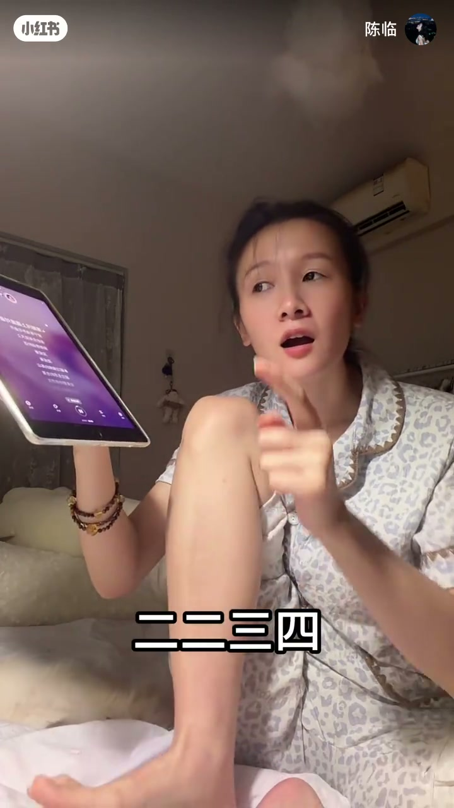
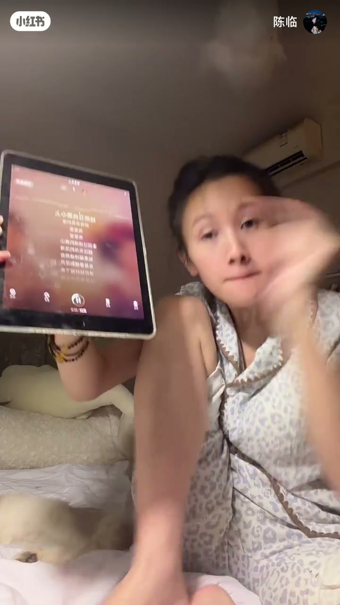
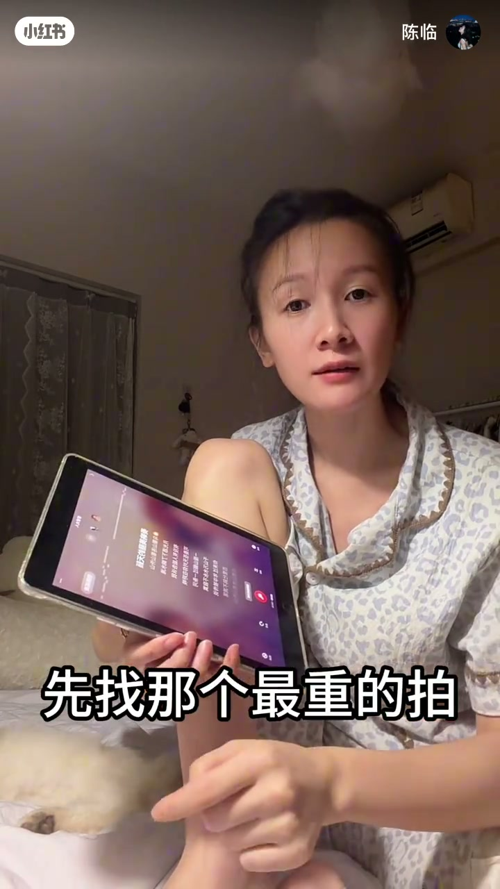

内容要点
知识结构
[00:00→00:40]
听鼓点咚
提出「唱歌卡不上拍」；反复确认听到鼓点「咚」，建立听感锚点。
[00:40→01:00]
脚踩数拍
用脚打拍子，边听咚边数一二三四，把身体节拍器打开。
[01:00→02:10]
歌词对重拍
对着平板歌词问「哪个字」「第三个字」；指出「哪里是重拍」「这里是重拍」。
[02:10→02:30]
先找最重拍
随机切歌也先分轻重；结论：先找最重的拍，刚开始找不到没关系，慢慢找。
总结
卡拍的入口不是硬跟旋律，而是先锁定鼓点/最重拍，再用身体踩稳再对歌词。
约02:40后本地视频帧难以抽出；后半若有练唱演示，本页未配图。口播为繁体识别，正文已转简体。
图文实录
问题：卡不上拍
00:00 – 00:40
开场直奔主题：「很多人说唱歌卡不上拍对不对」。随后反复问「听到这个咚了没有」「咚听到没有」——先把鼓点听感钉住，而不是一上来就唱词。
很多人说唱歌卡不上拍对不对
听到这个咚了没有
[00:05] 开场：很多人说唱歌卡不上拍
Opening: many people say they can't stay on the beat while singing
[00:38] 引导听鼓点：咚听到没有
Cue the kick: did you hear that boom
用脚做节拍器
00:40 – 01:00
下一步：「你用脚打拍子」。一边听咚，一边口头数「一二三四 / 二二三四 / 三二三四」，并强调「用脚用脚踩」。把拍子从耳朵搬到身体，减少只靠脑子赶词。
你用脚打拍子
用脚用脚踩

[00:50] 踩拍数拍：一二三四、二二三四
Tap and count: one-two-three-four, two-two-three-four
歌词里哪个字在重拍
01:00 – 02:10
对着平板歌词提问「哪个字啊」「第三个字」，再问「哪里是重拍」「这里是重拍是不是」，并口头点「重」「重」。方法是：先定位重拍位置，再看落在重拍上的字，而不是整句糊过去。
哪个字啊
哪里是重拍
这里是重拍是不是
[01:30] 对照歌词：这个是哪个字／第三字
Match lyrics: which character is this / the third one

[02:05] 提问：哪里是重拍？这里是重拍
Ask: where is the downbeat? here is the downbeat
随机切歌也先抓最重拍
02:10 – 02:30
「好随机随机随机切一下」，现场区分「轻」「咚」「重」。结论收束：「你要先找那个重拍」「先找那个最重的拍」「刚开始找不到没关系，慢慢找」。把可迁移能力说清楚：换歌也一样，先抓最重拍。
你要先找那个重拍
先找那个最重的拍
刚开始找不到没关系

[02:28] 结论：先找最重的拍，慢慢找
Takeaway: find the heaviest beat first; take your time